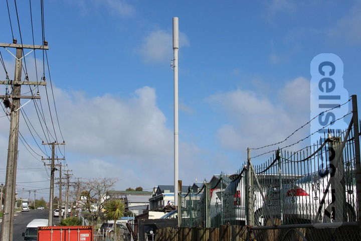
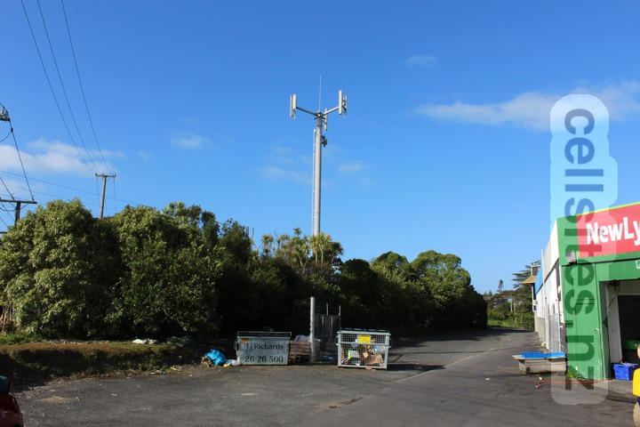

- Telecom Owairaka
- Vodafone Glendene South
- 2degrees Kelston
- Spark Kelston North
- Vodafone New Lynn South
- 2degrees Lynn Mall AAU
Vodafone Glendene South
2degrees Kelston
- ID: AKL-006-001
- Code: KLST
- GIS Geek
Spark Kelston North

Vodafone New Lynn South
2degrees Lynn Mall AAU
- ID: AKL-006-072
- Code: LNAU
- GIS Geek